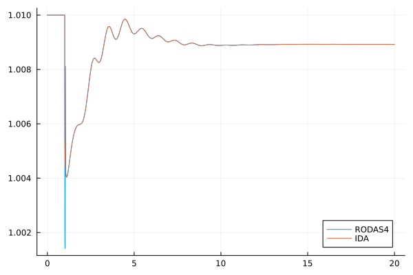

#PSSE 240 Bus Case system with Renewables
Originally Contributed by: José Daniel Lara
Introduction
This tutorial will introduce the industry models of Renewable Energy the comparisons between DiffEq Integration techniques for comparison. We show the uses of Sundials and OrdinaryDiffEq to obtain the transient response of a system to a perturbation.
julia> using PowerSimulationsDynamicsjulia> using PowerSystemCaseBuilderjulia> using PowerSystemsjulia> using Sundialsjulia> using Plotsjulia> using OrdinaryDiffEqjulia> const PSY = PowerSystemsPowerSystems
Load the system
julia> file_dir = joinpath(pkgdir(PowerSimulationsDynamics), "test", "data_tests")"/home/runner/work/PowerSimulationsDynamics.jl/PowerSimulationsDynamics.jl/test/data_tests"julia> sys = System(joinpath(file_dir, "WECC_240_dynamic.json"); runchecks = false)┌ Warning: The System was deserialized with checks disabled, and so was not validated. └ @ PowerSystems ~/.julia/packages/PowerSystems/qRmML/src/base.jl:1452 System ┌───────────────────┬─────────────┐ │ Property │ Value │ ├───────────────────┼─────────────┤ │ Name │ │ │ Description │ │ │ System Units Base │ SYSTEM_BASE │ │ Base Power │ 100.0 │ │ Base Frequency │ 60.0 │ │ Num Components │ 1501 │ └───────────────────┴─────────────┘ Static Components ┌─────────────────┬───────┬────────────────────────┬───────────────┐ │ Type │ Count │ Has Static Time Series │ Has Forecasts │ ├─────────────────┼───────┼────────────────────────┼───────────────┤ │ Arc │ 351 │ false │ false │ │ Area │ 4 │ false │ false │ │ Bus │ 243 │ false │ false │ │ FixedAdmittance │ 7 │ false │ false │ │ Line │ 329 │ false │ false │ │ LoadZone │ 14 │ false │ false │ │ StandardLoad │ 139 │ false │ false │ │ TapTransformer │ 2 │ false │ false │ │ ThermalStandard │ 146 │ false │ false │ │ Transformer2W │ 120 │ false │ false │ └─────────────────┴───────┴────────────────────────┴───────────────┘ Dynamic Components ┌──────────────────┬───────┐ │ Type │ Count │ ├──────────────────┼───────┤ │ DynamicGenerator │ 1 │ │ DynamicGenerator │ 36 │ │ DynamicGenerator │ 6 │ │ DynamicGenerator │ 3 │ │ DynamicGenerator │ 41 │ │ DynamicGenerator │ 22 │ │ DynamicInverter │ 37 │ └──────────────────┴───────┘julia> # Transform loads to constant impedance include(joinpath(pkgdir(PowerSimulationsDynamics), "test/utils/get_results.jl"))get_csv_data (generic function with 1 method)julia> for l in get_components(PSY.StandardLoad, sys) transform_load_to_constant_impedance(l) end┌ Warning: Load data is transformed under the assumption of a 1.0 p.u. Voltage Magnitude └ @ PowerSimulationsDynamics ~/work/PowerSimulationsDynamics.jl/PowerSimulationsDynamics.jl/src/utils/psy_utils.jl:81 ┌ Warning: Load data is transformed under the assumption of a 1.0 p.u. Voltage Magnitude └ @ PowerSimulationsDynamics ~/work/PowerSimulationsDynamics.jl/PowerSimulationsDynamics.jl/src/utils/psy_utils.jl:81 ┌ Warning: Load data is transformed under the assumption of a 1.0 p.u. Voltage Magnitude └ @ PowerSimulationsDynamics ~/work/PowerSimulationsDynamics.jl/PowerSimulationsDynamics.jl/src/utils/psy_utils.jl:81 ┌ Warning: Load data is transformed under the assumption of a 1.0 p.u. Voltage Magnitude └ @ PowerSimulationsDynamics ~/work/PowerSimulationsDynamics.jl/PowerSimulationsDynamics.jl/src/utils/psy_utils.jl:81 ┌ Warning: Load data is transformed under the assumption of a 1.0 p.u. Voltage Magnitude └ @ PowerSimulationsDynamics ~/work/PowerSimulationsDynamics.jl/PowerSimulationsDynamics.jl/src/utils/psy_utils.jl:81 ┌ Warning: Load data is transformed under the assumption of a 1.0 p.u. Voltage Magnitude └ @ PowerSimulationsDynamics ~/work/PowerSimulationsDynamics.jl/PowerSimulationsDynamics.jl/src/utils/psy_utils.jl:81 ┌ Warning: Load data is transformed under the assumption of a 1.0 p.u. Voltage Magnitude └ @ PowerSimulationsDynamics ~/work/PowerSimulationsDynamics.jl/PowerSimulationsDynamics.jl/src/utils/psy_utils.jl:81 ┌ Warning: Load data is transformed under the assumption of a 1.0 p.u. Voltage Magnitude └ @ PowerSimulationsDynamics ~/work/PowerSimulationsDynamics.jl/PowerSimulationsDynamics.jl/src/utils/psy_utils.jl:81 ┌ Warning: Load data is transformed under the assumption of a 1.0 p.u. Voltage Magnitude └ @ PowerSimulationsDynamics ~/work/PowerSimulationsDynamics.jl/PowerSimulationsDynamics.jl/src/utils/psy_utils.jl:81 ┌ Warning: Load data is transformed under the assumption of a 1.0 p.u. Voltage Magnitude └ @ PowerSimulationsDynamics ~/work/PowerSimulationsDynamics.jl/PowerSimulationsDynamics.jl/src/utils/psy_utils.jl:81 ┌ Warning: Load data is transformed under the assumption of a 1.0 p.u. Voltage Magnitude └ @ PowerSimulationsDynamics ~/work/PowerSimulationsDynamics.jl/PowerSimulationsDynamics.jl/src/utils/psy_utils.jl:81 ┌ Warning: Load data is transformed under the assumption of a 1.0 p.u. Voltage Magnitude └ @ PowerSimulationsDynamics ~/work/PowerSimulationsDynamics.jl/PowerSimulationsDynamics.jl/src/utils/psy_utils.jl:81 ┌ Warning: Load data is transformed under the assumption of a 1.0 p.u. Voltage Magnitude └ @ PowerSimulationsDynamics ~/work/PowerSimulationsDynamics.jl/PowerSimulationsDynamics.jl/src/utils/psy_utils.jl:81 ┌ Warning: Load data is transformed under the assumption of a 1.0 p.u. Voltage Magnitude └ @ PowerSimulationsDynamics ~/work/PowerSimulationsDynamics.jl/PowerSimulationsDynamics.jl/src/utils/psy_utils.jl:81 ┌ Warning: Load data is transformed under the assumption of a 1.0 p.u. Voltage Magnitude └ @ PowerSimulationsDynamics ~/work/PowerSimulationsDynamics.jl/PowerSimulationsDynamics.jl/src/utils/psy_utils.jl:81 ┌ Warning: Load data is transformed under the assumption of a 1.0 p.u. Voltage Magnitude └ @ PowerSimulationsDynamics ~/work/PowerSimulationsDynamics.jl/PowerSimulationsDynamics.jl/src/utils/psy_utils.jl:81 ┌ Warning: Load data is transformed under the assumption of a 1.0 p.u. Voltage Magnitude └ @ PowerSimulationsDynamics ~/work/PowerSimulationsDynamics.jl/PowerSimulationsDynamics.jl/src/utils/psy_utils.jl:81 ┌ Warning: Load data is transformed under the assumption of a 1.0 p.u. Voltage Magnitude └ @ PowerSimulationsDynamics ~/work/PowerSimulationsDynamics.jl/PowerSimulationsDynamics.jl/src/utils/psy_utils.jl:81 ┌ Warning: Load data is transformed under the assumption of a 1.0 p.u. Voltage Magnitude └ @ PowerSimulationsDynamics ~/work/PowerSimulationsDynamics.jl/PowerSimulationsDynamics.jl/src/utils/psy_utils.jl:81 ┌ Warning: Load data is transformed under the assumption of a 1.0 p.u. Voltage Magnitude └ @ PowerSimulationsDynamics ~/work/PowerSimulationsDynamics.jl/PowerSimulationsDynamics.jl/src/utils/psy_utils.jl:81 ┌ Warning: Load data is transformed under the assumption of a 1.0 p.u. Voltage Magnitude └ @ PowerSimulationsDynamics ~/work/PowerSimulationsDynamics.jl/PowerSimulationsDynamics.jl/src/utils/psy_utils.jl:81 ┌ Warning: Load data is transformed under the assumption of a 1.0 p.u. Voltage Magnitude └ @ PowerSimulationsDynamics ~/work/PowerSimulationsDynamics.jl/PowerSimulationsDynamics.jl/src/utils/psy_utils.jl:81 ┌ Warning: Load data is transformed under the assumption of a 1.0 p.u. Voltage Magnitude └ @ PowerSimulationsDynamics ~/work/PowerSimulationsDynamics.jl/PowerSimulationsDynamics.jl/src/utils/psy_utils.jl:81 ┌ Warning: Load data is transformed under the assumption of a 1.0 p.u. Voltage Magnitude └ @ PowerSimulationsDynamics ~/work/PowerSimulationsDynamics.jl/PowerSimulationsDynamics.jl/src/utils/psy_utils.jl:81 ┌ Warning: Load data is transformed under the assumption of a 1.0 p.u. Voltage Magnitude └ @ PowerSimulationsDynamics ~/work/PowerSimulationsDynamics.jl/PowerSimulationsDynamics.jl/src/utils/psy_utils.jl:81 ┌ Warning: Load data is transformed under the assumption of a 1.0 p.u. Voltage Magnitude └ @ PowerSimulationsDynamics ~/work/PowerSimulationsDynamics.jl/PowerSimulationsDynamics.jl/src/utils/psy_utils.jl:81 ┌ Warning: Load data is transformed under the assumption of a 1.0 p.u. Voltage Magnitude └ @ PowerSimulationsDynamics ~/work/PowerSimulationsDynamics.jl/PowerSimulationsDynamics.jl/src/utils/psy_utils.jl:81 ┌ Warning: Load data is transformed under the assumption of a 1.0 p.u. Voltage Magnitude └ @ PowerSimulationsDynamics ~/work/PowerSimulationsDynamics.jl/PowerSimulationsDynamics.jl/src/utils/psy_utils.jl:81 ┌ Warning: Load data is transformed under the assumption of a 1.0 p.u. Voltage Magnitude └ @ PowerSimulationsDynamics ~/work/PowerSimulationsDynamics.jl/PowerSimulationsDynamics.jl/src/utils/psy_utils.jl:81 ┌ Warning: Load data is transformed under the assumption of a 1.0 p.u. Voltage Magnitude └ @ PowerSimulationsDynamics ~/work/PowerSimulationsDynamics.jl/PowerSimulationsDynamics.jl/src/utils/psy_utils.jl:81 ┌ Warning: Load data is transformed under the assumption of a 1.0 p.u. Voltage Magnitude └ @ PowerSimulationsDynamics ~/work/PowerSimulationsDynamics.jl/PowerSimulationsDynamics.jl/src/utils/psy_utils.jl:81 ┌ Warning: Load data is transformed under the assumption of a 1.0 p.u. Voltage Magnitude └ @ PowerSimulationsDynamics ~/work/PowerSimulationsDynamics.jl/PowerSimulationsDynamics.jl/src/utils/psy_utils.jl:81 ┌ Warning: Load data is transformed under the assumption of a 1.0 p.u. Voltage Magnitude └ @ PowerSimulationsDynamics ~/work/PowerSimulationsDynamics.jl/PowerSimulationsDynamics.jl/src/utils/psy_utils.jl:81 ┌ Warning: Load data is transformed under the assumption of a 1.0 p.u. Voltage Magnitude └ @ PowerSimulationsDynamics ~/work/PowerSimulationsDynamics.jl/PowerSimulationsDynamics.jl/src/utils/psy_utils.jl:81 ┌ Warning: Load data is transformed under the assumption of a 1.0 p.u. Voltage Magnitude └ @ PowerSimulationsDynamics ~/work/PowerSimulationsDynamics.jl/PowerSimulationsDynamics.jl/src/utils/psy_utils.jl:81 ┌ Warning: Load data is transformed under the assumption of a 1.0 p.u. Voltage Magnitude └ @ PowerSimulationsDynamics ~/work/PowerSimulationsDynamics.jl/PowerSimulationsDynamics.jl/src/utils/psy_utils.jl:81 ┌ Warning: Load data is transformed under the assumption of a 1.0 p.u. Voltage Magnitude └ @ PowerSimulationsDynamics ~/work/PowerSimulationsDynamics.jl/PowerSimulationsDynamics.jl/src/utils/psy_utils.jl:81 ┌ Warning: Load data is transformed under the assumption of a 1.0 p.u. Voltage Magnitude └ @ PowerSimulationsDynamics ~/work/PowerSimulationsDynamics.jl/PowerSimulationsDynamics.jl/src/utils/psy_utils.jl:81 ┌ Warning: Load data is transformed under the assumption of a 1.0 p.u. Voltage Magnitude └ @ PowerSimulationsDynamics ~/work/PowerSimulationsDynamics.jl/PowerSimulationsDynamics.jl/src/utils/psy_utils.jl:81 ┌ Warning: Load data is transformed under the assumption of a 1.0 p.u. Voltage Magnitude └ @ PowerSimulationsDynamics ~/work/PowerSimulationsDynamics.jl/PowerSimulationsDynamics.jl/src/utils/psy_utils.jl:81 ┌ Warning: Load data is transformed under the assumption of a 1.0 p.u. Voltage Magnitude └ @ PowerSimulationsDynamics ~/work/PowerSimulationsDynamics.jl/PowerSimulationsDynamics.jl/src/utils/psy_utils.jl:81 ┌ Warning: Load data is transformed under the assumption of a 1.0 p.u. Voltage Magnitude └ @ PowerSimulationsDynamics ~/work/PowerSimulationsDynamics.jl/PowerSimulationsDynamics.jl/src/utils/psy_utils.jl:81 ┌ Warning: Load data is transformed under the assumption of a 1.0 p.u. Voltage Magnitude └ @ PowerSimulationsDynamics ~/work/PowerSimulationsDynamics.jl/PowerSimulationsDynamics.jl/src/utils/psy_utils.jl:81 ┌ Warning: Load data is transformed under the assumption of a 1.0 p.u. Voltage Magnitude └ @ PowerSimulationsDynamics ~/work/PowerSimulationsDynamics.jl/PowerSimulationsDynamics.jl/src/utils/psy_utils.jl:81 ┌ Warning: Load data is transformed under the assumption of a 1.0 p.u. Voltage Magnitude └ @ PowerSimulationsDynamics ~/work/PowerSimulationsDynamics.jl/PowerSimulationsDynamics.jl/src/utils/psy_utils.jl:81 ┌ Warning: Load data is transformed under the assumption of a 1.0 p.u. Voltage Magnitude └ @ PowerSimulationsDynamics ~/work/PowerSimulationsDynamics.jl/PowerSimulationsDynamics.jl/src/utils/psy_utils.jl:81 ┌ Warning: Load data is transformed under the assumption of a 1.0 p.u. Voltage Magnitude └ @ PowerSimulationsDynamics ~/work/PowerSimulationsDynamics.jl/PowerSimulationsDynamics.jl/src/utils/psy_utils.jl:81 ┌ Warning: Load data is transformed under the assumption of a 1.0 p.u. Voltage Magnitude └ @ PowerSimulationsDynamics ~/work/PowerSimulationsDynamics.jl/PowerSimulationsDynamics.jl/src/utils/psy_utils.jl:81 ┌ Warning: Load data is transformed under the assumption of a 1.0 p.u. Voltage Magnitude └ @ PowerSimulationsDynamics ~/work/PowerSimulationsDynamics.jl/PowerSimulationsDynamics.jl/src/utils/psy_utils.jl:81 ┌ Warning: Load data is transformed under the assumption of a 1.0 p.u. Voltage Magnitude └ @ PowerSimulationsDynamics ~/work/PowerSimulationsDynamics.jl/PowerSimulationsDynamics.jl/src/utils/psy_utils.jl:81 ┌ Warning: Load data is transformed under the assumption of a 1.0 p.u. Voltage Magnitude └ @ PowerSimulationsDynamics ~/work/PowerSimulationsDynamics.jl/PowerSimulationsDynamics.jl/src/utils/psy_utils.jl:81 ┌ Warning: Load data is transformed under the assumption of a 1.0 p.u. Voltage Magnitude └ @ PowerSimulationsDynamics ~/work/PowerSimulationsDynamics.jl/PowerSimulationsDynamics.jl/src/utils/psy_utils.jl:81 ┌ Warning: Load data is transformed under the assumption of a 1.0 p.u. Voltage Magnitude └ @ PowerSimulationsDynamics ~/work/PowerSimulationsDynamics.jl/PowerSimulationsDynamics.jl/src/utils/psy_utils.jl:81 ┌ Warning: Load data is transformed under the assumption of a 1.0 p.u. Voltage Magnitude └ @ PowerSimulationsDynamics ~/work/PowerSimulationsDynamics.jl/PowerSimulationsDynamics.jl/src/utils/psy_utils.jl:81 ┌ Warning: Load data is transformed under the assumption of a 1.0 p.u. Voltage Magnitude └ @ PowerSimulationsDynamics ~/work/PowerSimulationsDynamics.jl/PowerSimulationsDynamics.jl/src/utils/psy_utils.jl:81 ┌ Warning: Load data is transformed under the assumption of a 1.0 p.u. Voltage Magnitude └ @ PowerSimulationsDynamics ~/work/PowerSimulationsDynamics.jl/PowerSimulationsDynamics.jl/src/utils/psy_utils.jl:81 ┌ Warning: Load data is transformed under the assumption of a 1.0 p.u. Voltage Magnitude └ @ PowerSimulationsDynamics ~/work/PowerSimulationsDynamics.jl/PowerSimulationsDynamics.jl/src/utils/psy_utils.jl:81 ┌ Warning: Load data is transformed under the assumption of a 1.0 p.u. Voltage Magnitude └ @ PowerSimulationsDynamics ~/work/PowerSimulationsDynamics.jl/PowerSimulationsDynamics.jl/src/utils/psy_utils.jl:81 ┌ Warning: Load data is transformed under the assumption of a 1.0 p.u. Voltage Magnitude └ @ PowerSimulationsDynamics ~/work/PowerSimulationsDynamics.jl/PowerSimulationsDynamics.jl/src/utils/psy_utils.jl:81 ┌ Warning: Load data is transformed under the assumption of a 1.0 p.u. Voltage Magnitude └ @ PowerSimulationsDynamics ~/work/PowerSimulationsDynamics.jl/PowerSimulationsDynamics.jl/src/utils/psy_utils.jl:81 ┌ Warning: Load data is transformed under the assumption of a 1.0 p.u. Voltage Magnitude └ @ PowerSimulationsDynamics ~/work/PowerSimulationsDynamics.jl/PowerSimulationsDynamics.jl/src/utils/psy_utils.jl:81 ┌ Warning: Load data is transformed under the assumption of a 1.0 p.u. Voltage Magnitude └ @ PowerSimulationsDynamics ~/work/PowerSimulationsDynamics.jl/PowerSimulationsDynamics.jl/src/utils/psy_utils.jl:81 ┌ Warning: Load data is transformed under the assumption of a 1.0 p.u. Voltage Magnitude └ @ PowerSimulationsDynamics ~/work/PowerSimulationsDynamics.jl/PowerSimulationsDynamics.jl/src/utils/psy_utils.jl:81 ┌ Warning: Load data is transformed under the assumption of a 1.0 p.u. Voltage Magnitude └ @ PowerSimulationsDynamics ~/work/PowerSimulationsDynamics.jl/PowerSimulationsDynamics.jl/src/utils/psy_utils.jl:81 ┌ Warning: Load data is transformed under the assumption of a 1.0 p.u. Voltage Magnitude └ @ PowerSimulationsDynamics ~/work/PowerSimulationsDynamics.jl/PowerSimulationsDynamics.jl/src/utils/psy_utils.jl:81 ┌ Warning: Load data is transformed under the assumption of a 1.0 p.u. Voltage Magnitude └ @ PowerSimulationsDynamics ~/work/PowerSimulationsDynamics.jl/PowerSimulationsDynamics.jl/src/utils/psy_utils.jl:81 ┌ Warning: Load data is transformed under the assumption of a 1.0 p.u. Voltage Magnitude └ @ PowerSimulationsDynamics ~/work/PowerSimulationsDynamics.jl/PowerSimulationsDynamics.jl/src/utils/psy_utils.jl:81 ┌ Warning: Load data is transformed under the assumption of a 1.0 p.u. Voltage Magnitude └ @ PowerSimulationsDynamics ~/work/PowerSimulationsDynamics.jl/PowerSimulationsDynamics.jl/src/utils/psy_utils.jl:81 ┌ Warning: Load data is transformed under the assumption of a 1.0 p.u. Voltage Magnitude └ @ PowerSimulationsDynamics ~/work/PowerSimulationsDynamics.jl/PowerSimulationsDynamics.jl/src/utils/psy_utils.jl:81 ┌ Warning: Load data is transformed under the assumption of a 1.0 p.u. Voltage Magnitude └ @ PowerSimulationsDynamics ~/work/PowerSimulationsDynamics.jl/PowerSimulationsDynamics.jl/src/utils/psy_utils.jl:81 ┌ Warning: Load data is transformed under the assumption of a 1.0 p.u. Voltage Magnitude └ @ PowerSimulationsDynamics ~/work/PowerSimulationsDynamics.jl/PowerSimulationsDynamics.jl/src/utils/psy_utils.jl:81 ┌ Warning: Load data is transformed under the assumption of a 1.0 p.u. Voltage Magnitude └ @ PowerSimulationsDynamics ~/work/PowerSimulationsDynamics.jl/PowerSimulationsDynamics.jl/src/utils/psy_utils.jl:81 ┌ Warning: Load data is transformed under the assumption of a 1.0 p.u. Voltage Magnitude └ @ PowerSimulationsDynamics ~/work/PowerSimulationsDynamics.jl/PowerSimulationsDynamics.jl/src/utils/psy_utils.jl:81 ┌ Warning: Load data is transformed under the assumption of a 1.0 p.u. Voltage Magnitude └ @ PowerSimulationsDynamics ~/work/PowerSimulationsDynamics.jl/PowerSimulationsDynamics.jl/src/utils/psy_utils.jl:81 ┌ Warning: Load data is transformed under the assumption of a 1.0 p.u. Voltage Magnitude └ @ PowerSimulationsDynamics ~/work/PowerSimulationsDynamics.jl/PowerSimulationsDynamics.jl/src/utils/psy_utils.jl:81 ┌ Warning: Load data is transformed under the assumption of a 1.0 p.u. Voltage Magnitude └ @ PowerSimulationsDynamics ~/work/PowerSimulationsDynamics.jl/PowerSimulationsDynamics.jl/src/utils/psy_utils.jl:81 ┌ Warning: Load data is transformed under the assumption of a 1.0 p.u. Voltage Magnitude └ @ PowerSimulationsDynamics ~/work/PowerSimulationsDynamics.jl/PowerSimulationsDynamics.jl/src/utils/psy_utils.jl:81 ┌ Warning: Load data is transformed under the assumption of a 1.0 p.u. Voltage Magnitude └ @ PowerSimulationsDynamics ~/work/PowerSimulationsDynamics.jl/PowerSimulationsDynamics.jl/src/utils/psy_utils.jl:81 ┌ Warning: Load data is transformed under the assumption of a 1.0 p.u. Voltage Magnitude └ @ PowerSimulationsDynamics ~/work/PowerSimulationsDynamics.jl/PowerSimulationsDynamics.jl/src/utils/psy_utils.jl:81 ┌ Warning: Load data is transformed under the assumption of a 1.0 p.u. Voltage Magnitude └ @ PowerSimulationsDynamics ~/work/PowerSimulationsDynamics.jl/PowerSimulationsDynamics.jl/src/utils/psy_utils.jl:81 ┌ Warning: Load data is transformed under the assumption of a 1.0 p.u. Voltage Magnitude └ @ PowerSimulationsDynamics ~/work/PowerSimulationsDynamics.jl/PowerSimulationsDynamics.jl/src/utils/psy_utils.jl:81 ┌ Warning: Load data is transformed under the assumption of a 1.0 p.u. Voltage Magnitude └ @ PowerSimulationsDynamics ~/work/PowerSimulationsDynamics.jl/PowerSimulationsDynamics.jl/src/utils/psy_utils.jl:81 ┌ Warning: Load data is transformed under the assumption of a 1.0 p.u. Voltage Magnitude └ @ PowerSimulationsDynamics ~/work/PowerSimulationsDynamics.jl/PowerSimulationsDynamics.jl/src/utils/psy_utils.jl:81 ┌ Warning: Load data is transformed under the assumption of a 1.0 p.u. Voltage Magnitude └ @ PowerSimulationsDynamics ~/work/PowerSimulationsDynamics.jl/PowerSimulationsDynamics.jl/src/utils/psy_utils.jl:81 ┌ Warning: Load data is transformed under the assumption of a 1.0 p.u. Voltage Magnitude └ @ PowerSimulationsDynamics ~/work/PowerSimulationsDynamics.jl/PowerSimulationsDynamics.jl/src/utils/psy_utils.jl:81 ┌ Warning: Load data is transformed under the assumption of a 1.0 p.u. Voltage Magnitude └ @ PowerSimulationsDynamics ~/work/PowerSimulationsDynamics.jl/PowerSimulationsDynamics.jl/src/utils/psy_utils.jl:81 ┌ Warning: Load data is transformed under the assumption of a 1.0 p.u. Voltage Magnitude └ @ PowerSimulationsDynamics ~/work/PowerSimulationsDynamics.jl/PowerSimulationsDynamics.jl/src/utils/psy_utils.jl:81 ┌ Warning: Load data is transformed under the assumption of a 1.0 p.u. Voltage Magnitude └ @ PowerSimulationsDynamics ~/work/PowerSimulationsDynamics.jl/PowerSimulationsDynamics.jl/src/utils/psy_utils.jl:81 ┌ Warning: Load data is transformed under the assumption of a 1.0 p.u. Voltage Magnitude └ @ PowerSimulationsDynamics ~/work/PowerSimulationsDynamics.jl/PowerSimulationsDynamics.jl/src/utils/psy_utils.jl:81 ┌ Warning: Load data is transformed under the assumption of a 1.0 p.u. Voltage Magnitude └ @ PowerSimulationsDynamics ~/work/PowerSimulationsDynamics.jl/PowerSimulationsDynamics.jl/src/utils/psy_utils.jl:81 ┌ Warning: Load data is transformed under the assumption of a 1.0 p.u. Voltage Magnitude └ @ PowerSimulationsDynamics ~/work/PowerSimulationsDynamics.jl/PowerSimulationsDynamics.jl/src/utils/psy_utils.jl:81 ┌ Warning: Load data is transformed under the assumption of a 1.0 p.u. Voltage Magnitude └ @ PowerSimulationsDynamics ~/work/PowerSimulationsDynamics.jl/PowerSimulationsDynamics.jl/src/utils/psy_utils.jl:81 ┌ Warning: Load data is transformed under the assumption of a 1.0 p.u. Voltage Magnitude └ @ PowerSimulationsDynamics ~/work/PowerSimulationsDynamics.jl/PowerSimulationsDynamics.jl/src/utils/psy_utils.jl:81 ┌ Warning: Load data is transformed under the assumption of a 1.0 p.u. Voltage Magnitude └ @ PowerSimulationsDynamics ~/work/PowerSimulationsDynamics.jl/PowerSimulationsDynamics.jl/src/utils/psy_utils.jl:81 ┌ Warning: Load data is transformed under the assumption of a 1.0 p.u. Voltage Magnitude └ @ PowerSimulationsDynamics ~/work/PowerSimulationsDynamics.jl/PowerSimulationsDynamics.jl/src/utils/psy_utils.jl:81 ┌ Warning: Load data is transformed under the assumption of a 1.0 p.u. Voltage Magnitude └ @ PowerSimulationsDynamics ~/work/PowerSimulationsDynamics.jl/PowerSimulationsDynamics.jl/src/utils/psy_utils.jl:81 ┌ Warning: Load data is transformed under the assumption of a 1.0 p.u. Voltage Magnitude └ @ PowerSimulationsDynamics ~/work/PowerSimulationsDynamics.jl/PowerSimulationsDynamics.jl/src/utils/psy_utils.jl:81 ┌ Warning: Load data is transformed under the assumption of a 1.0 p.u. Voltage Magnitude └ @ PowerSimulationsDynamics ~/work/PowerSimulationsDynamics.jl/PowerSimulationsDynamics.jl/src/utils/psy_utils.jl:81 ┌ Warning: Load data is transformed under the assumption of a 1.0 p.u. Voltage Magnitude └ @ PowerSimulationsDynamics ~/work/PowerSimulationsDynamics.jl/PowerSimulationsDynamics.jl/src/utils/psy_utils.jl:81 ┌ Warning: Load data is transformed under the assumption of a 1.0 p.u. Voltage Magnitude └ @ PowerSimulationsDynamics ~/work/PowerSimulationsDynamics.jl/PowerSimulationsDynamics.jl/src/utils/psy_utils.jl:81 ┌ Warning: Load data is transformed under the assumption of a 1.0 p.u. Voltage Magnitude └ @ PowerSimulationsDynamics ~/work/PowerSimulationsDynamics.jl/PowerSimulationsDynamics.jl/src/utils/psy_utils.jl:81 ┌ Warning: Load data is transformed under the assumption of a 1.0 p.u. Voltage Magnitude └ @ PowerSimulationsDynamics ~/work/PowerSimulationsDynamics.jl/PowerSimulationsDynamics.jl/src/utils/psy_utils.jl:81 ┌ Warning: Load data is transformed under the assumption of a 1.0 p.u. Voltage Magnitude └ @ PowerSimulationsDynamics ~/work/PowerSimulationsDynamics.jl/PowerSimulationsDynamics.jl/src/utils/psy_utils.jl:81 ┌ Warning: Load data is transformed under the assumption of a 1.0 p.u. Voltage Magnitude └ @ PowerSimulationsDynamics ~/work/PowerSimulationsDynamics.jl/PowerSimulationsDynamics.jl/src/utils/psy_utils.jl:81 ┌ Warning: Load data is transformed under the assumption of a 1.0 p.u. Voltage Magnitude └ @ PowerSimulationsDynamics ~/work/PowerSimulationsDynamics.jl/PowerSimulationsDynamics.jl/src/utils/psy_utils.jl:81 ┌ Warning: Load data is transformed under the assumption of a 1.0 p.u. Voltage Magnitude └ @ PowerSimulationsDynamics ~/work/PowerSimulationsDynamics.jl/PowerSimulationsDynamics.jl/src/utils/psy_utils.jl:81 ┌ Warning: Load data is transformed under the assumption of a 1.0 p.u. Voltage Magnitude └ @ PowerSimulationsDynamics ~/work/PowerSimulationsDynamics.jl/PowerSimulationsDynamics.jl/src/utils/psy_utils.jl:81 ┌ Warning: Load data is transformed under the assumption of a 1.0 p.u. Voltage Magnitude └ @ PowerSimulationsDynamics ~/work/PowerSimulationsDynamics.jl/PowerSimulationsDynamics.jl/src/utils/psy_utils.jl:81 ┌ Warning: Load data is transformed under the assumption of a 1.0 p.u. Voltage Magnitude └ @ PowerSimulationsDynamics ~/work/PowerSimulationsDynamics.jl/PowerSimulationsDynamics.jl/src/utils/psy_utils.jl:81 ┌ Warning: Load data is transformed under the assumption of a 1.0 p.u. Voltage Magnitude └ @ PowerSimulationsDynamics ~/work/PowerSimulationsDynamics.jl/PowerSimulationsDynamics.jl/src/utils/psy_utils.jl:81 ┌ Warning: Load data is transformed under the assumption of a 1.0 p.u. Voltage Magnitude └ @ PowerSimulationsDynamics ~/work/PowerSimulationsDynamics.jl/PowerSimulationsDynamics.jl/src/utils/psy_utils.jl:81 ┌ Warning: Load data is transformed under the assumption of a 1.0 p.u. Voltage Magnitude └ @ PowerSimulationsDynamics ~/work/PowerSimulationsDynamics.jl/PowerSimulationsDynamics.jl/src/utils/psy_utils.jl:81 ┌ Warning: Load data is transformed under the assumption of a 1.0 p.u. Voltage Magnitude └ @ PowerSimulationsDynamics ~/work/PowerSimulationsDynamics.jl/PowerSimulationsDynamics.jl/src/utils/psy_utils.jl:81 ┌ Warning: Load data is transformed under the assumption of a 1.0 p.u. Voltage Magnitude └ @ PowerSimulationsDynamics ~/work/PowerSimulationsDynamics.jl/PowerSimulationsDynamics.jl/src/utils/psy_utils.jl:81 ┌ Warning: Load data is transformed under the assumption of a 1.0 p.u. Voltage Magnitude └ @ PowerSimulationsDynamics ~/work/PowerSimulationsDynamics.jl/PowerSimulationsDynamics.jl/src/utils/psy_utils.jl:81 ┌ Warning: Load data is transformed under the assumption of a 1.0 p.u. Voltage Magnitude └ @ PowerSimulationsDynamics ~/work/PowerSimulationsDynamics.jl/PowerSimulationsDynamics.jl/src/utils/psy_utils.jl:81 ┌ Warning: Load data is transformed under the assumption of a 1.0 p.u. Voltage Magnitude └ @ PowerSimulationsDynamics ~/work/PowerSimulationsDynamics.jl/PowerSimulationsDynamics.jl/src/utils/psy_utils.jl:81 ┌ Warning: Load data is transformed under the assumption of a 1.0 p.u. Voltage Magnitude └ @ PowerSimulationsDynamics ~/work/PowerSimulationsDynamics.jl/PowerSimulationsDynamics.jl/src/utils/psy_utils.jl:81 ┌ Warning: Load data is transformed under the assumption of a 1.0 p.u. Voltage Magnitude └ @ PowerSimulationsDynamics ~/work/PowerSimulationsDynamics.jl/PowerSimulationsDynamics.jl/src/utils/psy_utils.jl:81 ┌ Warning: Load data is transformed under the assumption of a 1.0 p.u. Voltage Magnitude └ @ PowerSimulationsDynamics ~/work/PowerSimulationsDynamics.jl/PowerSimulationsDynamics.jl/src/utils/psy_utils.jl:81 ┌ Warning: Load data is transformed under the assumption of a 1.0 p.u. Voltage Magnitude └ @ PowerSimulationsDynamics ~/work/PowerSimulationsDynamics.jl/PowerSimulationsDynamics.jl/src/utils/psy_utils.jl:81 ┌ Warning: Load data is transformed under the assumption of a 1.0 p.u. Voltage Magnitude └ @ PowerSimulationsDynamics ~/work/PowerSimulationsDynamics.jl/PowerSimulationsDynamics.jl/src/utils/psy_utils.jl:81 ┌ Warning: Load data is transformed under the assumption of a 1.0 p.u. Voltage Magnitude └ @ PowerSimulationsDynamics ~/work/PowerSimulationsDynamics.jl/PowerSimulationsDynamics.jl/src/utils/psy_utils.jl:81 ┌ Warning: Load data is transformed under the assumption of a 1.0 p.u. Voltage Magnitude └ @ PowerSimulationsDynamics ~/work/PowerSimulationsDynamics.jl/PowerSimulationsDynamics.jl/src/utils/psy_utils.jl:81 ┌ Warning: Load data is transformed under the assumption of a 1.0 p.u. Voltage Magnitude └ @ PowerSimulationsDynamics ~/work/PowerSimulationsDynamics.jl/PowerSimulationsDynamics.jl/src/utils/psy_utils.jl:81 ┌ Warning: Load data is transformed under the assumption of a 1.0 p.u. Voltage Magnitude └ @ PowerSimulationsDynamics ~/work/PowerSimulationsDynamics.jl/PowerSimulationsDynamics.jl/src/utils/psy_utils.jl:81 ┌ Warning: Load data is transformed under the assumption of a 1.0 p.u. Voltage Magnitude └ @ PowerSimulationsDynamics ~/work/PowerSimulationsDynamics.jl/PowerSimulationsDynamics.jl/src/utils/psy_utils.jl:81 ┌ Warning: Load data is transformed under the assumption of a 1.0 p.u. Voltage Magnitude └ @ PowerSimulationsDynamics ~/work/PowerSimulationsDynamics.jl/PowerSimulationsDynamics.jl/src/utils/psy_utils.jl:81 ┌ Warning: Load data is transformed under the assumption of a 1.0 p.u. Voltage Magnitude └ @ PowerSimulationsDynamics ~/work/PowerSimulationsDynamics.jl/PowerSimulationsDynamics.jl/src/utils/psy_utils.jl:81 ┌ Warning: Load data is transformed under the assumption of a 1.0 p.u. Voltage Magnitude └ @ PowerSimulationsDynamics ~/work/PowerSimulationsDynamics.jl/PowerSimulationsDynamics.jl/src/utils/psy_utils.jl:81 ┌ Warning: Load data is transformed under the assumption of a 1.0 p.u. Voltage Magnitude └ @ PowerSimulationsDynamics ~/work/PowerSimulationsDynamics.jl/PowerSimulationsDynamics.jl/src/utils/psy_utils.jl:81 ┌ Warning: Load data is transformed under the assumption of a 1.0 p.u. Voltage Magnitude └ @ PowerSimulationsDynamics ~/work/PowerSimulationsDynamics.jl/PowerSimulationsDynamics.jl/src/utils/psy_utils.jl:81 ┌ Warning: Load data is transformed under the assumption of a 1.0 p.u. Voltage Magnitude └ @ PowerSimulationsDynamics ~/work/PowerSimulationsDynamics.jl/PowerSimulationsDynamics.jl/src/utils/psy_utils.jl:81 ┌ Warning: Load data is transformed under the assumption of a 1.0 p.u. Voltage Magnitude └ @ PowerSimulationsDynamics ~/work/PowerSimulationsDynamics.jl/PowerSimulationsDynamics.jl/src/utils/psy_utils.jl:81 ┌ Warning: Load data is transformed under the assumption of a 1.0 p.u. Voltage Magnitude └ @ PowerSimulationsDynamics ~/work/PowerSimulationsDynamics.jl/PowerSimulationsDynamics.jl/src/utils/psy_utils.jl:81 ┌ Warning: Load data is transformed under the assumption of a 1.0 p.u. Voltage Magnitude └ @ PowerSimulationsDynamics ~/work/PowerSimulationsDynamics.jl/PowerSimulationsDynamics.jl/src/utils/psy_utils.jl:81 ┌ Warning: Load data is transformed under the assumption of a 1.0 p.u. Voltage Magnitude └ @ PowerSimulationsDynamics ~/work/PowerSimulationsDynamics.jl/PowerSimulationsDynamics.jl/src/utils/psy_utils.jl:81 ┌ Warning: Load data is transformed under the assumption of a 1.0 p.u. Voltage Magnitude └ @ PowerSimulationsDynamics ~/work/PowerSimulationsDynamics.jl/PowerSimulationsDynamics.jl/src/utils/psy_utils.jl:81 ┌ Warning: Load data is transformed under the assumption of a 1.0 p.u. Voltage Magnitude └ @ PowerSimulationsDynamics ~/work/PowerSimulationsDynamics.jl/PowerSimulationsDynamics.jl/src/utils/psy_utils.jl:81
Build the simulation and initialize the problem
The next step is to create the simulation structure. This will create the indexing of our system that will be used to formulate the differential-algebraic system of equations. To do so, it is required to specify the perturbation that will occur in the system. In this case, we will use a ResidualModel formulation, for more details about the formulation checkout the Models Section in PowerSimulationsDynamics.jl documentation.
julia> using Loggingjulia> sim_ida = Simulation( ResidualModel, sys, #system pwd(), (0.0, 20.0), #time span BranchTrip(1.0, Line, "CORONADO -1101-PALOVRDE -1401-i_10"); console_level = Logging.Info, )[ Info: Unit System changed to UnitSystem.DEVICE_BASE = 1 [ Info: Pre-Initializing Simulation States [ Info: Unit System changed to UnitSystem.SYSTEM_BASE = 0 ┌ Warning: Unit generator-3631-NB set at the limit -0.14000000000000004. Q_max = 0.20000000000000004 Q_min = -0.14000000000000004 └ @ PowerFlows ~/.julia/packages/PowerFlows/TDLGc/src/post_processing.jl:348 ┌ Warning: Unit generator-6132-G set at the limit -1.47. Q_max = 1.47 Q_min = -1.47 └ @ PowerFlows ~/.julia/packages/PowerFlows/TDLGc/src/post_processing.jl:348 ┌ Warning: Unit generator-6433-E set at the limit 0.59. Q_max = 0.59 Q_min = -0.59 └ @ PowerFlows ~/.julia/packages/PowerFlows/TDLGc/src/post_processing.jl:348 [ Info: PowerFlow solve converged, the results have been stored in the system [ Info: Unit System changed to UnitSystem.DEVICE_BASE = 1 [ Info: Residual from initial guess: max = 9.827763047809412e-10 at 1268, total = 2.3846225827075845e-8 Iter f(x) inf-norm Step 2-norm ------ -------------- -------------- [ Info: Initialization non-linear solve succeeded with a tolerance of 1.0e-9 using solver trust_region. Saving solution. [ Info: Attaching Perturbations [ Info: Simulations status = BUILT ┌ Info: │ ─────────────────────────────────────────────────────────────────────────────── │ Time Allocations │ ─────────────── ─────────────── │ Total measured: 39.0s 5.45GiB │ │ Section ncalls time %tot alloc %tot │ ─────────────────────────────────────────────────────────────────────────────── │ Build Simulation 1 39.0s 100.0% 5.45GiB 100.0% │ Build Simulation Inputs 1 4.64s 11.9% 271MiB 4.9% │ Wrap Branches 1 12.8μs 0.0% 240B 0.0% │ Wrap Dynamic Injectors 1 2.84s 7.3% 182MiB 3.3% │ Calculate MM, DAE_vector, Tota... 1 328ms 0.8% 22.4MiB 0.4% │ Wrap Static Injectors 1 277ms 0.7% 7.29MiB 0.1% │ Pre-initialization 1 8.91s 22.9% 565MiB 10.1% │ Power Flow solution 1 2.15s 5.5% 101MiB 1.8% │ Initialize Static Injectors 1 600ns 0.0% 0.00B 0.0% │ Initialize Dynamic Injectors 1 6.33s 16.2% 441MiB 7.9% │ Calculate Jacobian 1 19.7s 50.6% 4.34GiB 79.7% │ Make Model Function 1 7.81ms 0.0% 126KiB 0.0% │ Initial Condition NLsolve refine... 1 4.79s 12.3% 262MiB 4.7% │ Build Perturbations 1 229ms 0.6% 16.9MiB 0.3% │ Make DiffEq Problem 1 684ms 1.8% 15.9MiB 0.3% │ ─────────────────────────────────────────────────────────────────────────────── └ Simulation Summary ┌─────────────────────────┬────────────────┐ │ Property │ Value │ ├─────────────────────────┼────────────────┤ │ Status │ BUILT │ │ Simulation Type │ Residual Model │ │ Initialized? │ Yes │ │ Multimachine system? │ Yes │ │ Time Span │ (0.0, 20.0) │ │ Number of States │ 2164 │ │ Number of Perturbations │ 1 │ └─────────────────────────┴────────────────┘
Run the simulation using Sundials
We will now run the simulation using Sundials.jl solver IDA() by specifying the maximum dt we want for the simulation. In our experience with this solver, solution times are faster when supplying information about the maximum time step than the tolerances as we can see in the example
julia> execute!(sim_ida, IDA(), dtmax = 0.01)SIMULATION_FINALIZED::BUILD_STATUS = 6
Read the results and plot a system variable
After the simulation is completed, we can extract the results and make plots as desired. In this case, we will plot the voltage magnitude at the bus at which the line was connected.
julia> res_ida = read_results(sim_ida)Simulation Results Summary ┌────────────────────────────┬──────────────┐ │ Property │ Value │ ├────────────────────────────┼──────────────┤ │ System Base Power [MVA] │ 100.0 │ │ System Base Frequency [Hz] │ 60.0 │ │ Time Span │ (0.0, 20.0) │ │ Total Time Steps │ 2015 │ │ Number of States │ 2164 │ │ Total solve time │ 29.254604551 │ └────────────────────────────┴──────────────┘julia> v1101_ida = get_voltage_magnitude_series(res_ida, 1101);julia> plot(v1101_ida);

Run the simulation using Rodas4()
In this case, we will use a MassMatrixModel formulation, for more details about the formulation checkout the Models Section in PowerSimulationsDynamics.jl documentation
julia> sim_rodas = Simulation( MassMatrixModel, sys, #system pwd(), (0.0, 20.0), #time span BranchTrip(1.0, Line, "CORONADO -1101-PALOVRDE -1401-i_10"); console_level = Logging.Info, )[ Info: Unit System changed to UnitSystem.DEVICE_BASE = 1 [ Info: Pre-Initializing Simulation States [ Info: Unit System changed to UnitSystem.SYSTEM_BASE = 0 ┌ Warning: Unit generator-3631-NB set at the limit -0.14000000000000004. Q_max = 0.20000000000000004 Q_min = -0.14000000000000004 └ @ PowerFlows ~/.julia/packages/PowerFlows/TDLGc/src/post_processing.jl:348 ┌ Warning: Unit generator-6132-G set at the limit -1.47. Q_max = 1.47 Q_min = -1.47 └ @ PowerFlows ~/.julia/packages/PowerFlows/TDLGc/src/post_processing.jl:348 ┌ Warning: Unit generator-6433-E set at the limit 0.59. Q_max = 0.59 Q_min = -0.59 └ @ PowerFlows ~/.julia/packages/PowerFlows/TDLGc/src/post_processing.jl:348 [ Info: PowerFlow solve converged, the results have been stored in the system [ Info: Unit System changed to UnitSystem.DEVICE_BASE = 1 [ Info: Residual from initial guess: max = 9.827763047809412e-10 at 1268, total = 2.3846225827075845e-8 Iter f(x) inf-norm Step 2-norm ------ -------------- -------------- [ Info: Initialization non-linear solve succeeded with a tolerance of 1.0e-9 using solver trust_region. Saving solution. [ Info: Attaching Perturbations [ Info: Simulations status = BUILT ┌ Info: │ ─────────────────────────────────────────────────────────────────────────────── │ Time Allocations │ ─────────────── ─────────────── │ Total measured: 9.51s 819MiB │ │ Section ncalls time %tot alloc %tot │ ─────────────────────────────────────────────────────────────────────────────── │ Build Simulation 1 9.51s 100.0% 819MiB 100.0% │ Build Simulation Inputs 1 8.28ms 0.1% 7.30MiB 0.9% │ Wrap Branches 1 6.60μs 0.0% 240B 0.0% │ Wrap Dynamic Injectors 1 4.56ms 0.0% 2.44MiB 0.3% │ Calculate MM, DAE_vector, Tota... 1 1.03ms 0.0% 1.90MiB 0.2% │ Wrap Static Injectors 1 552μs 0.0% 288KiB 0.0% │ Pre-initialization 1 35.7ms 0.4% 17.0MiB 2.1% │ Power Flow solution 1 29.0ms 0.3% 13.0MiB 1.6% │ Initialize Static Injectors 1 600ns 0.0% 0.00B 0.0% │ Initialize Dynamic Injectors 1 6.20ms 0.1% 3.75MiB 0.5% │ Calculate Jacobian 1 7.54s 79.3% 609MiB 74.5% │ Make Model Function 1 7.99ms 0.1% 126KiB 0.0% │ Initial Condition NLsolve refine... 1 1.32s 13.9% 169MiB 20.7% │ Build Perturbations 1 18.9ms 0.2% 570KiB 0.1% │ Make DiffEq Problem 1 577ms 6.1% 15.1MiB 1.8% │ ─────────────────────────────────────────────────────────────────────────────── └ Simulation Summary ┌─────────────────────────┬───────────────────┐ │ Property │ Value │ ├─────────────────────────┼───────────────────┤ │ Status │ BUILT │ │ Simulation Type │ Mass Matrix Model │ │ Initialized? │ Yes │ │ Multimachine system? │ Yes │ │ Time Span │ (0.0, 20.0) │ │ Number of States │ 2164 │ │ Number of Perturbations │ 1 │ └─────────────────────────┴───────────────────┘
We will now run the simulation using OrdinaryDiffEq.jl solver Rodas4() by specifying the tolerance we want for the simulation. In our experience with this solver, solution times are faster when supplying information about the atol and rtol values as we can see in the example. The solver will also work with a specified dtmax but take a significantly longer time to solve. When using OrdinaryDiffEq.jl solvers always pass the option initializealg = NoInit() to avoid unnecessary re-initialization of the algebraic equations.
julia> execute!( sim_rodas, Rodas4(), saveat = 0.01, atol = 1e-10, rtol = 1e-10, initializealg = NoInit(), )SIMULATION_FINALIZED::BUILD_STATUS = 6
Read the results
After the simulation is completed, we can extract the results and make plots as desired. In this case, we will plot the voltage magnitude at the bus at which the line was connected.
julia> res_rodas = read_results(sim_rodas)Simulation Results Summary ┌────────────────────────────┬───────────────┐ │ Property │ Value │ ├────────────────────────────┼───────────────┤ │ System Base Power [MVA] │ 100.0 │ │ System Base Frequency [Hz] │ 60.0 │ │ Time Span │ (0.0, 20.0) │ │ Total Time Steps │ 2002 │ │ Number of States │ 2164 │ │ Total solve time │ 287.959271513 │ └────────────────────────────┴───────────────┘
Compare the results
After the simulation is completed, we can extract the results and make plots as desired. In this case, we will plot the voltage magnitude at the bus at which the line was connected. For both of the solution techniques.
julia> v1101 = get_voltage_magnitude_series(res_rodas, 1101);julia> plot(v1101, label = "RODAS4");julia> plot!(v1101_ida, label = "IDA");
